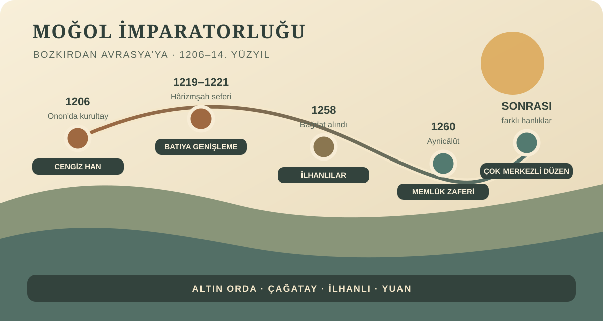

Moğol İmparatorluğu, bozkır topluluklarının 13. yüzyılda birleşmesiyle doğdu ve birkaç kuşak içinde Çin'den Doğu Avrupa'ya uzandı. Bu genişleme savaşların ve yıkımların yanı sıra yeni yönetim biçimleri, ticaret yolları ve toplumlar arası temaslar yarattı. İmparatorluk, tek bir merkezden aynı güçle yönetilen kalıcı bir bütün olarak kalmadı; zamanla farklı hanlıklara ve bölgesel tarihlere ayrıştı.
Bozkırdan imparatorluğa: Temüjin'in yükselişi
Moğol toplulukları, bugünkü Moğolistan ve İç Asya'nın geniş bozkırlarında yaşayan, hayvancılık ve mevsimsel hareketlilikle şekillenen farklı boy ve ittifaklardan oluşuyordu. Bu dünyada akrabalık bağları kadar koruma, ganimet, sadakat ve siyasi ortaklıklar da güç ilişkilerini belirliyordu. Temüjin, uzun mücadeleler ve ittifaklar sonucunda rakiplerini yenerek 1206'da Onon Nehri kıyısındaki kurultayda Cengiz Han unvanını aldı. Bu birleşme, yalnızca bir hükümdarın yükselişi değil; ordu, bağlılık ve idare düzeninin yeniden kurulmasıydı.[1][2]
Moğol ordularının başarısını tek bir nedene bağlamak mümkün değil. Atlı hareket kabiliyeti ve okçuluk önemliydi; fakat istihbarat, disiplin, farklı birlikleri bir arada kullanma, teslim olan toplulukları sisteme katma ve rakiplerin siyasi bölünmelerinden yararlanma da etkili oldu. Fethedilen bölgelerin uzmanları, yöneticileri ve zanaatkârları imparatorluğun işleyişine dâhil edilebildi. Bu yöntemler her yerde aynı biçimde uygulanmadı; yerel şartlara göre değişti.[2]
Çin'den Hârizm'e, Rus knezliklerinden Avrupa'ya
Cengiz Han döneminde seferler kuzey Çin'deki Jin yönetimine ve Orta Asya'ya yöneldi. 1218'de Otrar'da bir ticaret kervanının öldürülmesi ve ardından gelen diplomatik kriz, Hârizmşahlar üzerine 1219'da başlayan büyük seferin yakın nedenlerinden biri oldu. Buhara ve Semerkant gibi şehirler Moğol hâkimiyetine girdi; Hârizmşah yönetimi dağıldı. Savaş, şehir kuşatmaları ve nüfus kayıpları ağır sonuçlar doğurdu; ancak olayların ayrıntıları ve kayıpların boyutu kaynaklara göre değiştiğinden kesin sayılarla anlatmak doğru olmaz.[1][2]
Cengiz Han 1227'de öldükten sonra seferler sona ermedi. Oğlu Ögedey büyük han oldu; kuzey Çin'deki Jin devleti 1234'te yenildi. Cuci'nin oğlu Batu Han'ın yönettiği batı seferleri 1237–1241 arasında Rus knezliklerinin ve Doğu Avrupa'nın bazı bölgelerinin işgal edilmesine yol açtı. Moğol orduları Macaristan ve Polonya'ya kadar ilerledi, fakat Avrupa'nın tamamını fethetmediler. Ögedey'in ölümünden sonra yaşanan siyasi gelişmeler ve imparatorluk içindeki kararlar, batıdaki ilerleyişin devamını etkiledi.[3]
Dönemin etkili isimleri
İmparatorluğun tarihi yalnızca Cengiz Han'ın hikâyesi değildir. Hanedan üyeleri, komutanlar, yerel yöneticiler ve sonradan yükselen bölgesel hükümdarlar farklı dönemlerde belirleyici oldu.[1][2]
1258'de Bağdat'ın alınması ve 1260'ta Aynicâlût
Möngke Kağan'ın batı seferi için görevlendirdiği Hülegü, 1256'da İran'da İlhanlı yönetimini kurdu. İki yıl sonra Moğol orduları Bağdat'ı ele geçirdi ve şehir büyük yıkıma uğradı. Bağdat merkezli Abbâsî hilâfeti sona erdi; ancak bu, İslam toplumlarının veya İslam tarihinin bitişi değildi. Kahire, Şam, Anadolu ve başka merkezlerde farklı Müslüman yönetimler ve topluluklar yaşamayı sürdürdü. Abbâsî halifeliğinin sonu ile Moğol seferlerinin daha geniş etkileri için [İslam Dünyası yazımıza](/islam-dunyasi.html) da bakabilirsiniz.[4][5]
Hülegü'nün orduları Suriye'ye ilerlediğinde Memlük yönetimi Mısır'ı savunmaya hazırlandı. 1260'ta Aynicâlût'ta Sultan Kutuz ve komutan Baybars'ın yer aldığı Memlük kuvvetleri Moğol ordusunu yendi. Bu zafer, Moğol ilerleyişini Mısır yönünde durdurdu; Moğolların Asya'daki varlığını sona erdirmedi ve bölgedeki rekabet de bitmedi. Sonraki yıllarda Memlüklerle İlhanlılar arasında savaşlar ve diplomatik ilişkiler sürdü. Memlüklerin sonraki iki buçuk yüzyıllık tarihini Memlük Sultanlığı yazımızda ele alıyoruz.[6]
Bir imparatorluk, farklı hanlıklar
1259'da Möngke'nin ölümü, büyük hanlık için bir veraset mücadelesini hızlandırdı. Cengiz Han soyundan gelen yönetimler giderek farklı siyasi merkezlerde güç kazandı: Çin'de Kubilay'ın Yuan hanedanı, İran'da İlhanlılar, Orta Asya'da Çağatay ulusu, Deşt-i Kıpçak ve Doğu Avrupa'da Altın Orda. Bu adlar, ilk günden itibaren kesin sınırları olan dört ayrı devlet kurulmuş gibi anlaşılmamalı; hanedan bağları, bağımlılık ilişkileri ve sınırlar zaman içinde değişti.[2][5][3]
Bu hanlıklar kendi çevrelerindeki toplumlarla farklı ilişkiler kurdu. Altın Orda, Rus knezlikleri ve Karadeniz-Hazar ticareti üzerinde etkili oldu. İlhanlılar İran, Irak ve Anadolu'yla bağlantılıydı; 1295'te hükümdar Gāzân Han'ın İslam'ı kabul etmesi, bu hanlığın siyasi ve kültürel dönüşümünde önemli bir eşik oluşturdu. Yuan yönetimi ise Çin'in idari gelenekleri ve nüfusuyla iç içe geçti. Bu farklılıklar, “Moğol yönetimi”nin her bölgede aynı sonuçları doğurmadığını gösterir.[3][5]
Yıkım, yeniden kuruluş ve tarihsel miras
Moğol fetihleri birçok şehirde kuşatma, katliam ve altyapı tahribatıyla hatırlanır; bu yıkımın boyutu yer ve döneme göre değişti. Buna karşılık Moğol yönetimleri, bazı bölgelerde ticaret ve haberleşme ağlarını da yeniden düzenledi; tüccarlar, elçiler, zanaatkârlar ve din bilginleri Avrasya'nın uzak merkezleri arasında seyahat etti. Bu bağlantıların güvenliği her zaman sağlanmış değildi ve siyasi çatışmalar sürdü. Dolayısıyla dönemi yalnızca “barbar istilası” ya da yalnızca barış ve ticaret çağı olarak tanımlamak, yaşananların farklı yönlerini siler.[2][7]
Moğol İmparatorluğu'nun en kalıcı sonuçlarından biri, geniş bir coğrafyada siyasi iktidarın yeniden paylaşılmasıydı. Yeni hanlıklar yerel kurumlarla, dillerle ve dinlerle etkileşerek başka toplumlara dönüştü. Bu nedenle 1258'de Bağdat'ın düşüşü önemli bir kırılma olsa da, tek başına İslam dünyasının veya Orta Çağ'ın sonu sayılmaz. Moğolların tarihi; bozkır siyaseti, Çin ve İran yönetimleri, Rus knezlikleri, Memlükler ve bölgesel Müslüman toplumların tarihine birlikte bakıldığında anlaşılır.
Kısa zaman çizelgesi
Kaynaklar ve ileri okuma
- Osman Gazi Özgüdenli, “Moğollar,” TDV İslâm Ansiklopedisi, 2020. Madde ve kaynak bilgisi.
- David Morgan, The Mongols, 2. bs., Wiley, 2007. İmparatorluğun siyasi yapısı, seferleri ve farklı toplumlar üzerindeki etkileri için akademik bir genel çalışma. Yayın ve katalog kaydı.
- “Altın Orda Hanlığı,” TDV İslâm Ansiklopedisi. Batu Han'ın batı seferleri ve Altın Orda tarihine ilişkin madde. Madde kaydı.
- “Bağdat,” TDV İslâm Ansiklopedisi, Abdülazîz ed-Dûrî'nin madde bölümü. Şehrin kuruluşu ve 1258'e kadar Abbâsî başkenti oluşu. Madde ve kaynak bilgisi.
- Abdülkadir Yuvalı, “İlhanlılar,” TDV İslâm Ansiklopedisi, 2000. Madde ve kaynak bilgisi.
- Abdülkerim Özaydın, “Aynicâlût Savaşı,” TDV İslâm Ansiklopedisi, 1991. Madde ve kaynak bilgisi.
- David Morgan, “The Mongols in Iran: A Reappraisal,” Iran, 42 (2004), s. 131. DOI ve dergi kaydı.
- Özgün şematik illüstrasyon: Valexirion. Harita veya belirli bir dönemin sınırlarını göstermez.
Moğol hâkimiyeti farklı coğrafyalarda farklı biçimlerde kuruldu. Tarihler, sınırlar ve nüfus kayıplarına ilişkin ayrıntılar kaynaklara göre değişebildiğinden, burada kesinliği tartışmalı sayısal tahminlere yer verilmemiştir. Kaynaklara 13 Kasım 2026 tarihinde erişilmiştir.